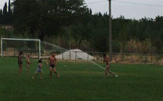

|
LES JEUX D'ENFANTS (The Children's Games)
Muriel Montini | F 2008 | 9 Min.
Material: HDV
Format: MiniDV
Originalsprache: o. Dialoge
Kamera: Muriel Montini
Schnitt: Muriel Montini
Produktion: Muriel Montini
Vertrieb: Muriel Montini
Preis für experimentelles Video, Strange Screen Festival, Thessaloniki 2009
Kinder spielen mit Wasser. Was sich so einfach auf eine Formel bringen lässt, ist in Wahrheit eine Bewegungsanalyse, die an die Anfänge des Kinos zurückführt: Erinnerungen an Louis Lumières Kinematographen und seinen L'ARROSEUR ARROSÉ werden wach.
Muriel Montini studiert Film. Ihre Arbeiten werden in Galerien ausgestellt und laufen auf zahlreichen Festivals. Sie lebt und arbeitet in Paris.
Filme (Auswahl): 2010 A cold place | Un jour ou l’autre nous partons tous en voyage en Italie II (UNDERDOX 05) | Place de l’Europe (Autour) | 2009 Alice | Adieu mon général | Solus ad Solam | 2008| Vers un pays éloigné | Les jeux d’enfants | 2007 Chambres (ou Chagrin) | 2006 Le monde est immense | 2003 Les Etrangères | 1999 Provisoirement et pour la vie | 1997 All along theses lines
zurück
|